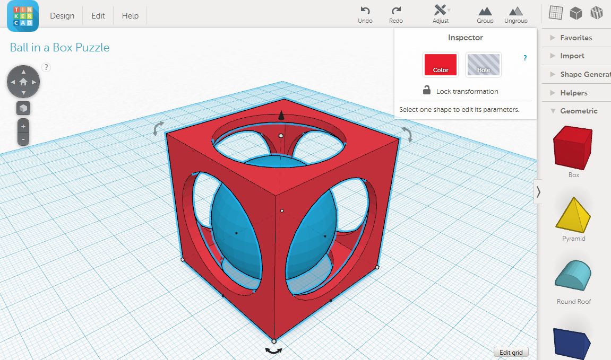

Sesión 6
Promedio 2: Tinkercad
Iniciamos un repaso sobre Tinkercad (un programa que ya había utilizado el ciclo pasado), así que fue sencillo de usar. La familiaridad previa con esta herramienta resultó ser una ventaja significativa. Recordé los fundamentos y las funciones principales, y esto facilitó rápidamente sumergirme en la creatividad y la construcción de modelos, aunque no códigos, estos sí fueron un poco más complejos de comprender.


